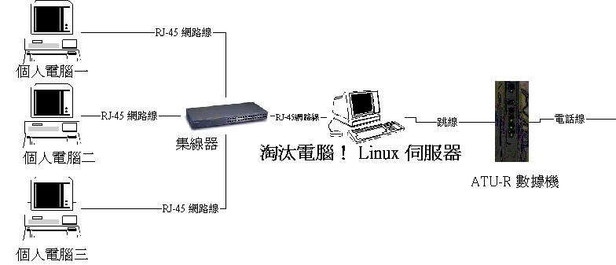
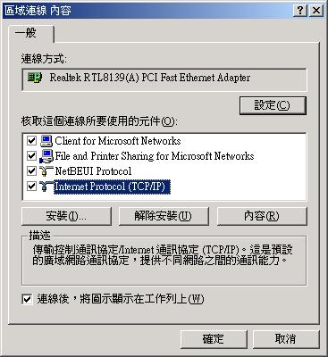
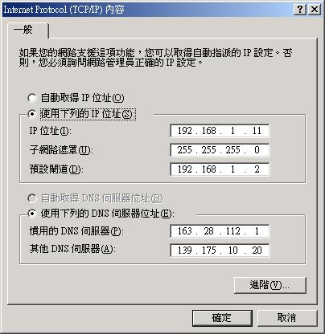

鸟哥的 Linux 与 ADSL 私房菜 


内部局域网的配置
最近更新日期：2002/01/20
网络的第一课：网络上的芳邻
如何挂机
要安装哪些通信协议
确定 Windows 网络参量
会不会中毒！当然会！
我想，很多朋友都是住在宿舍，同学之间都各自拥有计算机，即使在家里，可能也由于兄弟姊妹们众多，而使得家里有两部以上的计算机。在 早期，由于网络尚未发达，那个时候如果要从一部计算机上将数据拷贝到另一部计算机上，是一件等价困扰的事情，例如，你再你的 PC1 上面画了一张 BMP 的图形档，一个文件可大到 5MB 好了，那幺你要如何将这个文件拷贝到另一部计算机呢？最简单的方是就是以压缩软件将文件切割成数个小文件，然后再以软盘一个一个的转到另一部计算机上，然后再 解压缩将各个小文件结合成原来的图形档！不过，要知道，这样的方式可是很慢的！
现在可有很好的方式来互相分享文件了，以 Windows 为例，如果你装有『网络卡』的话，那幺你的桌面上一定会有『网络上的芳邻』这一个东西，您只要设定好网络的一些参量，那幺直接以鼠标点两下『网芳』，然后选择您想要挂机的计算机，呵呵，直接就可以连结到另一部计算机上了（当然罗，另一部计算机也需要设定资源分享才行！）。其实，『网络上的芳邻』这个东西基本上就是 NetBIOS 的通信协议而已，如果您对于 NetBIOS 并不知情，那幺把他想成是『网芳』就好了，当然，您也可以看一下 学习网络 里面的数据罗。
基本上，把两部以上的计算机连接起来，就可以说是一个小型的『局域网』(Intranet)了！好了，底下我们就来说一说，要如何达到这样的一种局域网的设定呢？而首先，我们先让 Windows 可以连接起来吧！然后只要将一个缺口连上 Linux Server ，就可以进行各种型式的架站啦！所以，这可是网络基础的第一课喔！
基本上，VBird 特别建议将『对内』与『对外』的挂机分开来，亦即在 Linux 主机上面以两块网络卡来分隔对内与对外的挂机，这样有个最大的好处，就是您的数据封包比较不容易碰撞而损坏！所以，个人推荐局域网挂机方式为使用以下这一种方式：

各网域内的计算机之间是以 Hub 或 switch 作为挂机的接口；
Hub 跟 Linux 主机之间以并行线（正常的一般网络线）连接；
Linux 主机（或者是其他的主机，例如 IP 分享器，或者是 Windows 2000）打开 NAT 的功能，将两块网络卡进行 IP 伪装的工作，使得内部的网络卡数据可以通过外部的网络卡数据传送上 Internet ；
最后，通过固定IP的学术网络，或者是自家的 ADSL 调制解调器来连上 Internet （注：当前较新的 ADSL Modem 与 Linux 的网络卡相连接的时候，需要使用『跳线』）。
所以，基本上主机是需要两块网络卡的，而且一块是与内部网络挂机的，这个内部网络通常是使用虚拟 IP 来进行挂机沟通的！我们比较常使用的虚拟 IP 是在 192.168.0.0 到 192.168.255.255 这一段，以我为例，个人是比较喜欢 192.168.1.0～192.168.1.255 这一段的网络，没有任何原因，单纯是因为喜欢！呵呵！
内部网络『局域网』：
在上面的图示中，应该可以很容易的发现，内部网络其实就是指：微型机一、微型机二、微型机三、Linux 主机的一块网络卡以上这四个接口（其实就是四张网络卡啦！）。基本上，我们希望内部网络可以很轻松的进行各种网络沟通，所以以上这四张网络卡的 IP 我们希望他可以在同一个网段之内，例如：我们可以设定 Linux 主机用来连接内部网络的 IP 为 192.168.1.2 ，而其他三张网络卡则分别设定为 192.168.1.11 ～ 192.168.1.13 就可以了，然后子掩码网络都是 255.255.255.0 ，则四张网络卡都属于同一网段，网络卡之间就可以直接挂机而不用通过 Getway 了！如果对于是否为同一网段不是很熟悉，建议先看一下 网络基础 吧！
|
容易发生错误的地方 局域网包括了 Linux 主机上面的一块对内的网络卡，因为这些卡都在同一个网段上，所以使用广播的方式就可以传输数据，而不需要通过通信闸亦即 gate way 来联系！如果以上面的图示为例，那幺 192.168.1.11 连到 192.168.1.13 可以直接使用网络上的芳邻『直接』挂机。不过，如果需要连到外部 Internet 上面，那幺就需要设定 gate way 了！另外， Gate way 通常就是局域网中的一块网络卡界面，以上面的图示为例，局域网的 Gate way 自然就是 Linux 的对内网络卡罗，那你的局域网内的计算机如何连上 Internet 呢？以上图为例：192.168.1.11 的计算机与 192.168.1.2 为同一网域内，所以数据可以直接传输，而网卡 192.168.1.2 可以通过 NAT 连上对外的网卡而连上 Internet ！然后你就可以上网啦！这里需要特别注意了， Gateway 的设定常常是大家容易错误的地方。 另外，以 Windows 为例，他缺省的 Gateway （对内网络卡界面的 IP ）为 192.168.0.1 这一个，所以你的局域网内的所有计算机 IP 需要设定在 192.168.0.2-192.168.0.255 之间喔！并且 Netmask 为 255.255.255.0 罗！ |
关于 Hub ：上面还要注意到，如果你只是一般的家庭的话，则 Hub 可以选择很便宜的五孔的那一种（一个大概只要 500-600 元），但是如果你是一个宿网，而且你们同学之间常常有大流量的文档传输（例如由微型机一传到微型机二），为了增加传输的效率，个人是建议使用可以自动分辨 10/100Mbps 的集线器或者是 switch 来使用，因为他的传输速率是一般 10Mbps 的10倍！当然，如果有钱的话，那幺买 Swith 更好！你可以看看底下的文章，看看 Switch 与 Hub 有什幺不同：
Hub 与 Switch 的分别
关于网络卡：当前的网络卡都太便宜了，一张 10/100 Mbps 的卡只要 200-300 就买的到了！基本上，买螃蟹卡就很够用了！不过，如果你要在 Linux 安装两块网络卡的话，那幺建议买两种不同芯片的网络卡会比较好喔！基本上，这里教大家的是 ADSL 系统，所以罗，随便一张网络卡就都可以啦！不用太担心喔！
关于网络线：这个是特别需要注意的地方，由于当前最常使用的网络线接头为 RJ45 的网络线，而这种网络线又因为接头部分有没有经过跳线处理而分为两种线材，一种是并行线（就是没有经过跳线处理的），一种就称为跳线。上面的图形中，连接到 Hub 的网络线都是正常的网络线，亦即是 并行线 ，而由 Linux 主机接到 ADSL 调制解调器的线段则是使用跳线！由于线材使用错误将造成无法挂机，所以这里请特别注意喔！
由于我们主要是使用 Linux 主机来挂机上 Windows 系统的微型机，所以在你的 Windows 系统中，网络就需要有以下的设定才能让每台计算机看到对方！
NetBEUI
让我们回到IBM最初进军微型机网络的时代�o他们当时的确需要一个很基本的网络通信协议�o但他们并不打算用此来建立大型网络�o仅仅供数十台计算机甚至更小的网络而已。基于这个诉求�o就诞生了Network Basic Input/Output System�o或称NetBIOS。
NetBIOS其实只有18个命令(command)来让网络的计算机能够创建?维持?和使用连接服 务。不过IBM在不久后又再推出了NetBIOS的延伸版本�sNetBIOS Extened User Interface�o或称NetBEUI�o基本上是NetBIOS的改良版本而已。然而�oNetBIOS和NetBEUI终究是不同的�sNetBEUI事 实上可以说是一个传输协议�o而NetBIOS充其量只是一组命令来让系统可以使用网络而已�o在技�X角度来看�o它是一个Application Program Interface (API)。
NetBEUI可以算是您能够用到的最快通信协议了。这个“最快”是指它可以将格式化数据放进封包 里面�o而接收结点又可以迅速的解读到内容。然而�oNetBEUI却有一个最致命的弱点�s它不是可路由(routable)协议�o也就是不能够和其它网络的 机器对讲。NetBEUI在本地网络里面是非常优秀的协议�o但如果您想和设在其它网络的机器沟通�oNetBEUI就不是您所需要的了。如果您想实现和其它 网络的计算机沟通�o您极有可能必需通过路由设备或路由软件来实现�o但无论用哪一样�o很遗憾�oNetBEUI都做不到。
不过�oMicrosoft 网络则运用一种叫 NetBIOS over IP 的技�X�o来连接不同网络的 NetBEUI 客户。但归根结底�o用来实现路由的不是 NetBIOS 而是 TCP/IP。
TCP/IP
美国国防部开发的 Transmission Control Protocol / Internet Protocol (TCP/IP)�o当初是用来配合ARPANET (Advanced Research Projects Agency Net)来处理不同硬件之间的连接问题的�o比如Sun系统和Mainframe?Mainframe和微型机之间的连接。
Internet Protocol (IP)工作于网络层(以后会继续和大家探讨 OSI 的网络层级)�o它提供了一套标准让不同的网络有规则可循�o当然�o前提是您想使用IP从一个网络将封包路由到另一个网络。IP在设计上是用来在LAN和LAN及PC和PC之间进行传输的。
您可以把IP看成是游戏规则�o而TCP则用来诠释这些规则的。虽然TCP/IP原先是专门为几所大 学和机构的使用而设计的�o但现在TCP/IP已经成为最流行的通信协议了�o我们使用的Internet就是用TCP/IP来传送封包的了。下面就让我们看 看TCP/IP是怎样工作的�s
假如您的公司在好些地方都有分公司�o各自都有着自己的本地网络(LAN)�o在总公司跑的是Novell网络�o但分公司大部分都是用麦金塔计算机。当Mac有数据要传送给PC的时候将会如何呢�t
首先�oTCP会在这两个平台创建起一个可以提供全双工检错(对双向的数据都进行错误检测)的连接。
接着�oIP制定好沟通规则以及Mac和PC之间的连接port。到这里为止�oTCP已经准备好数据 了�o如果数据太大�oIP就将之分拆成几份较小的封包�o并且在封包上面加上一个新的header(转送地址)�o确保封包会被正确传送。TCP还会加上标签说 明数据的种类及其长度。
再下来�oIP将封包转换成标准的编代码格式并将之传送给PC。
最后�o在PC上面的TCP将封包译码并翻译成PC能够懂的格式�o也就是它自己所使用的网络协议。 TCP/IP可以说是现行协议中用途最广的协议之一�o由于它尝试在所有硬件上实现所有事情。不过�o它也是最慢的传输协议之一�o在某些情形之下�o它的速度只 有NetBEUI的七成。
没错！不要怀疑！只要这两个通信协议就够了！通信协议越多反而越容易造成网络的延迟现象呢！在安装完成了上面的通信协议之后，相信你的局域网之中，所有的 Windows 微型机已经可以看到对方了，只要在打开资源分享项目，即可达到局域网的目的。此外，到底要不要安装 NetBIOS （或者是 NetBEUI）呢，建议您可以看一下底下这一篇：
如果你的局域网中并没有其他的服务器，那幺真的只要有这两个通信协议就够了喔！千万注意了！否则 Windows 98 与 Windows 2000 的互相挂机速度会很慢喔！
|
Windows 2000 与 Windows 98 『网芳』挂机的速度很慢？ 这个问题很有可能是来自于网络的通信协议的问题，先前 VBird 也发生了错误的认知，认为通信协议设定越多就会支持越多的网络服务，后来才知道，原来服务越多反而可能造成网络的停顿现象！在 VBird 的研究室中，就发生了 Windows 98 与 Windows 2000 的『网芳』挂机速度非常之慢，甚至会有无法挂机的问题。后来修改了网络的通信协议之后，就已经得到了改善。 解决方法：Windows98 在 Windows98 中，将鼠标移动『网芳』上，按右键，选内容，进入网络设定项目；
解决方法：Windows2000 进入网络设定中，同样的，将通信协议除去到只剩下两个即可！ |
连上 Internet 的方式：由于当前最常用来挂机的方式，主要分为：固定IP（例如学术网络，或者是固定制IP的专线），浮动式IP（例如当前最流行的 ADSL 计时制）两种，这两种网络的设定方式虽是大同小异，但是仍有部分不同的，所以你要先确定你的挂机上 Internet 的方式为何！不过，无论如何，在您的计算机上都需要底下的各项参量：
你的计算机 IP 及；
子掩码网络 IP 与；
Getway 的 IP 还有；
DNS 的 IP 一组。
另外，大家最常搞错的就是 DNS 这个东西啦，请记住『 DNS 这个 IP 地址并不是你的主机的 IP ，而是你的 ISP 提供给你的 DNS 主机地址』举例来说，南部的 Seednet 的 DNS 为 139.175.10.20，这个就是 DNS 啦！
设定 Linux 主机成为 NAT 主机：由于内部网络是由虚拟 IP 所构成的，虚拟 IP 并不能与外界的 Internet 沟通，所以你如果要连上 Internet 的话，就必须通过具有物理 IP 的 Linux 主机来挂机了！因此，你的 Linux 主机必须有两张网络卡：
一张以物理IP（不论是固定的或者是浮动的）与 Internet 挂机，
一张则以虚拟IP与你的内部网络挂机。
然后将这两块在 Linux 主机内的网络卡经由 Linux 内部的 NAT 设定来实现使 虚拟 IP 连上 Internet 的功能。
Linux 主机上的设定：如上面所说的，Linux 主机上面有两块网络卡，如何设定呢？
与外界沟通的网络卡：这一张网络卡的设定中，如果是固定 IP 的话，则直接输入 IP 及子掩码网络，就可以直接连上 Internet 了；而如果是使用拨接（或者是 ADSL 计时制），则必须使用 rp-pppoe 之类的软件来连上网络！
与内部网络沟通的网络卡：这一张卡的 IP 必须与你的内部网络的所有的计算机之 IP 都在同一网段内，例如 192.168.1.0-192.168.1.255 之内，另外，这一张网络卡的 IP 将是你内部网络的所有计算机的『通信闸』。
Windows 微型机上的设定：在微型机方面，由于我们已经设定了 NAT 主机，这一个主机有一个固定的虚拟 IP 、子掩码网络，因此，Windows 系统则直接输入：
确定网络卡没有问题；
在网络的设定项目中，设定通信协议『TCP/IP』与『BetBEUI』；
在 TCP/IP 的项目中输入：
一个固定的虚拟 IP
子掩码网络
而通信闸则设定为 NAT 主机的 IP
DNS 的设定为 ISP 所提供的 DNS 主机，而不是你的 NAT 主机！
基本上，网络的状态可以有点象下图：

TCP/IP 的状态则有点象下图：

通过上面的挂机、在 Windows 上面增加通信协议，并将你的 Linux 主机设定成为 NAT 主机，则你的局域网就可以成功的架设起来，并且可以通过 NAT 的技�X来实现每部计算机都可以连上 Internet 的功能喔！（相关的设定你可以来这里看看喔）
基本上，只要您设定好了 Windows 系统之后，设定了：
局域网中，其 IP 与 Netmask 为同一网段；
在网络的设定中，局域网的每一部计算机具有『相同的工作群组』与『不同的计算机名称』；
在网络的设定中，已经打开了『Files and Printer Sharing for MicroSoft 』这个项目，亦即『别人也可以使用我的计算机、打印机』之类的设定必需要打开；
欲被分享的计算机已经打开了『资源分享』或者是 NT 系列所谓的『共享』了（可直接在文件总管按右键来选择）。
如果上面的手续都达到了，那幺您的计算机就可以达到资源分享的目的罗！不过，由于去年九月份以来（2001/09）有一支严重的病毒『Nimda』病毒大肆的搞破坏！这支病毒恐怖的地方在于他可以使用 NetBIOS 这一个通信协议来感染，说的简单个点，就是『Nimda 病毒可以由网络上的芳邻的传输方式来感染！』在刚发病的时候，几乎同一个网域的只要有打开资源分享的计算机都中毒了！很是恐怖的！所以罗，这里要建议大家的是：
如果需要资源分享，那幺才打开资源分享；
并且在分享完毕之后，赶快将您打开的分享关闭！
可以的话，严格的控制您本地内的计算机流量！
尤其象我们研究室，由于系上所有的计算机都是在同一个网域中，即使您的研究室控制得很好，您也不敢肯定别的研究室可以很完备的抵挡病毒的入侵，所以，请尽量做好防护的工作，包括安装防毒软件、尽量减少资源分享的机会等等！
2002/ 01/21以来统计人数


Designed by VBird during 2001-2004. Aerosol Lab.